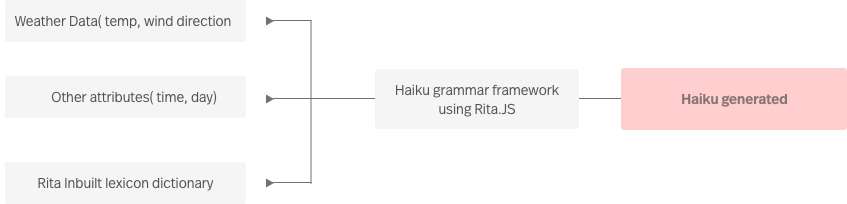
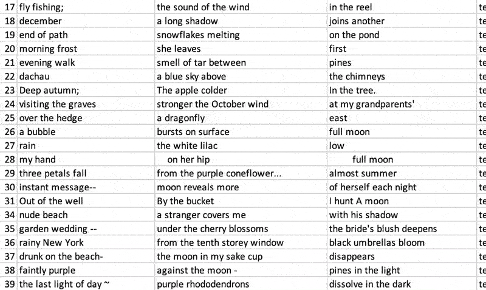
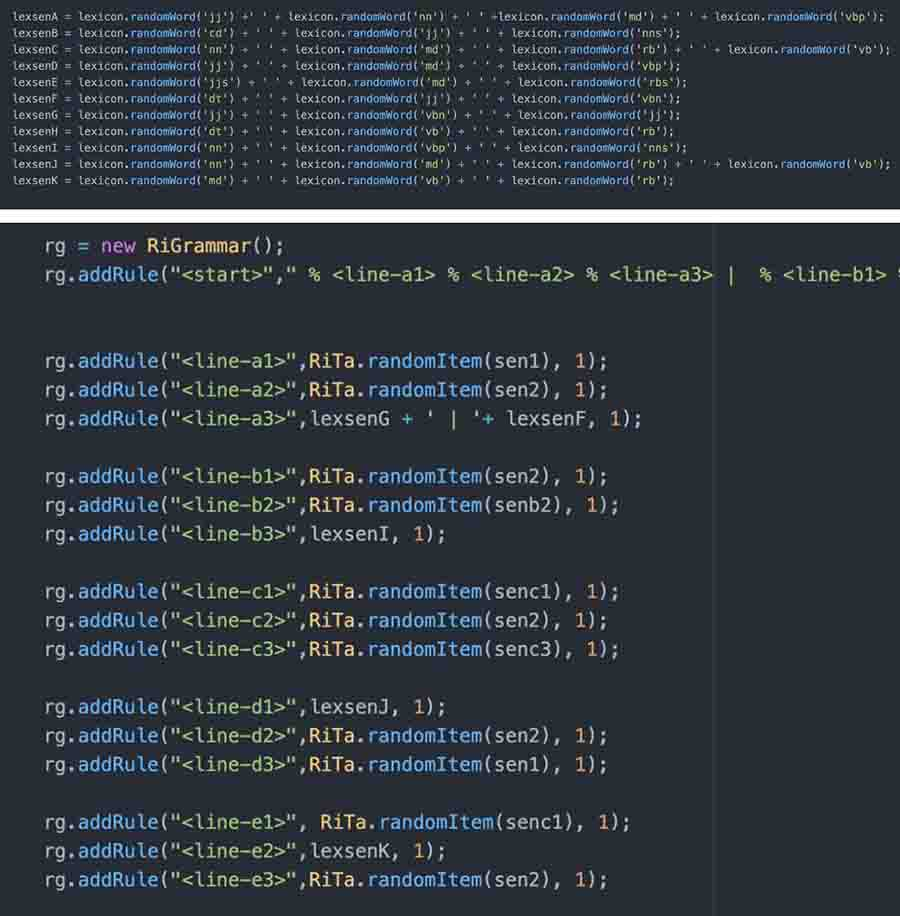

Weather data is openly available using OpenweathermapAPI. Using them, figuring out the data points that can be translated to a graphic.
Various data points from Weather App API
Figuring out various ways to visualise the values from weather to something perceivable by humans
The design was meant to be closer to abstract and not represent an everyday weather application. Use of saturated colours and grid layout to give a more clear expression for generated graphics

Haikus are mostly used as a celebration for nature. It tends to use abstract words from seasons, nature, months and simple things around us. There is an deliberate attempt to leave out a open ending allowing the users to visualise and generate conclusions based on perceptions,
Process of generating Haiku
The usual pattern for haikus is 3 lines , 17 syllables ( 5-7-5 syllables per sentence). But due to the limited experience in technology , the best I could figure out was to ease out the syllable limit for now. Haikus also doesn’t have to rhyme, that made things easier.
Downloaded sample set to examine syntax of haiku
Process for generating haiku
Step (1) Finding common/frequent words from Kaggle’s haiku database
Step (2) Converted values from weather data to text(ex: raining, hot, cold)
Step (3) Inbuilt lexicon dictionary of Rita
Mapping out syntax for haiku’s grammar
Step 4) Create haiku’s grammar using Rita.JS 
Creating grammar to form haiku sentences
Step 5) Generate haikus